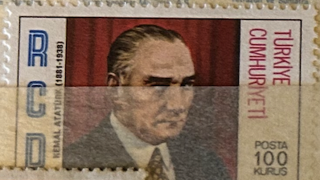
| SOURCE | TITLE| IMAGE MATCH | click to source page |
| Dreamstime.com | Isolated Turkish Stamp editorial photography. Image of used - 370767882 | 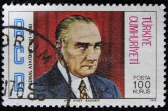 |
| Shutterstock | Istanbul Turkey December 25 2020 Turkish Stock Photo 2604339201 | Shutterstock | 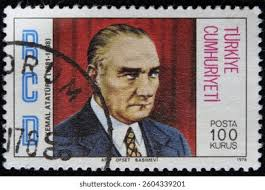 |
| eBay | 2061 - Turkey 1996 - Kemal Ataturk - MNH Set | eBay | 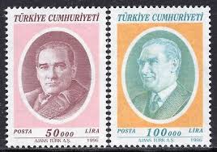 |
| HipStamp | Turkey 1996 - 50000 Ataturk - SG3278 used | Europe - Turkey, General Issue Stamp / HipStamp | 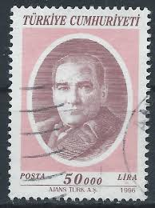 |
| Stampedia | TURKEY 1971 100 kurus Definitive Stamps, 1971series | Kemal Ataturk | 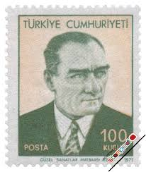 |
| eBay | Turkey - 1970-1971 - Ataturk - 50K - #01 | eBay | 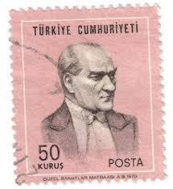 |
| Alamy | TURKEY - CIRCA 1996: a stamp printed in the Turkey shows Mustafa Kemal Ataturk, the First President of Turkey, Father of the Turks, circa 1996 Stock Photo - Alamy | 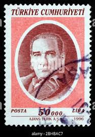 |
| eBay | Turkey Semi-Postal Stamps for sale | eBay | 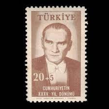 |
| Stampedia | stampedia TURKEY STAMP catalog | 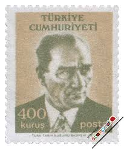 |
| Alamy | MOSCOW, RUSSIA - APRIL 08, 2023: Postage stamp printed in Uruguay shows Ceibo (National Flower), Definitives - Country motives serie, circa 1954 Stock Photo - Alamy | 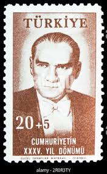 |
| Benim Koleksiyonum | 1973 ATATÜRK'ÜN ÖLÜMÜNÜ'NÜN 35.YILI Dörtlü Blok Pul | www.benimkoleksiyonum.com | 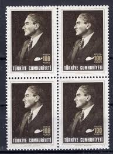 |
| Stampedia | stampedia TURKEY STAMP catalog | 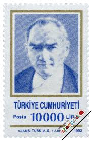 |
| Alamy | TURKEY - CIRCA 1999: stamp printed by Turkey, shows president Kemal Ataturk, circa 1999 Stock Photo - Alamy | 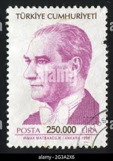 |
| eBay UK | Used Turkish Stamp Blocks for sale | eBay UK | 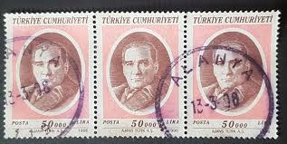 |
| Vintage Stamp with Man in Suit and Tie | 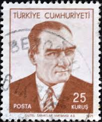 | |
| Alamy | TURKEY - CIRCA 1971: stamp printed by Turkey, shows Turkey-Bulgaria Railroad, circa 1971 Stock Photo - Alamy | 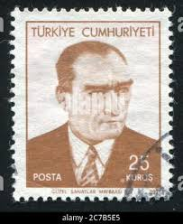 |
| TouchStamps | Stamp: Kemal Atatürk (1881-1938) (Turkey 1981) - TouchStamps | 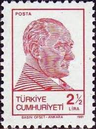 |
| Stampedia | TURKEY 1956 75 kurus Definitive Stamps, 1956series | Kemal Ataturk | 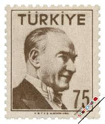 |
| eBay | Turkey Famous Country Leader Ataturk stamp 1969 MNH A-1 | eBay | 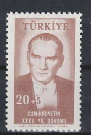 |
| 123RF | TURKEY - CIRCA 1971 A Stamp Printed In Turkey Shows A Portrait Of Kemal Ataturk, Circa 1971 Fotos, retratos, imágenes y fotografía de archivo libres de derecho. Image 24977818 | 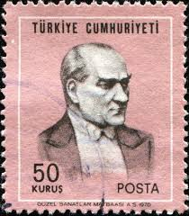 |
| eBay UK | Turkey Single Stamps for sale | eBay UK | 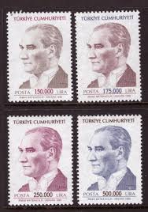 |
| Benim Koleksiyonum | Atatürk'ün Ölümünün 50. Yılı (1988) - Özel Blok Dantelli Pul | www.benimkoleksiyonum.com | 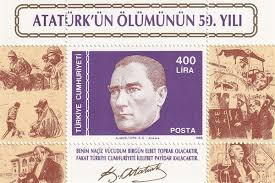 |
| Alamy | Postage stamp from Turkey in the Postal Stamps, 1996, Ataturk series Stock Photo - Alamy | 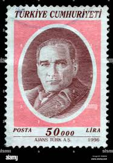 |
| 3rd-floor.org | Turkish Plate Metal License Plate Frame 4 Holes Kemal Ataturk Turkey Turkish Car Auto... Fr Tags | 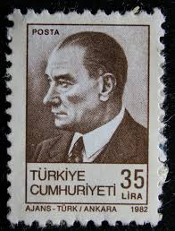 |
| eBay | Turkey Scott # 840 F/VF MNH 1940 17 ½ k President Atatürk | eBay | 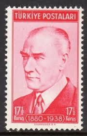 |
| lastdodo.com | Mustafa Kemal Atatürk [1881-1938] Stamp catalogue - LastDodo | 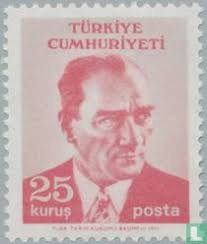 |
| eBay UK | Turkish Politicians Stamps for sale | eBay UK | 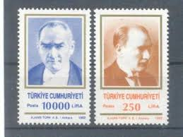 |
| Dreamstime.com | Kemal Ataturk editorial stock photo. Image of head, adult - 81240163 | 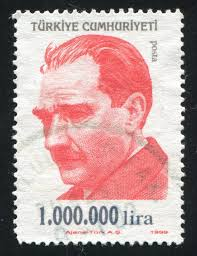 |
| Osta.ee | Türgi " ATATÜRK " 2008 (247183283) - Osta.ee | 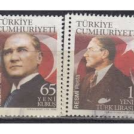 |
| Alamy | TURKEY- CIRCA 1998: stamp printed by Turkey, shows graphic artist Ihap Hulusi Gorey, circa 1998 Stock Photo - Alamy | 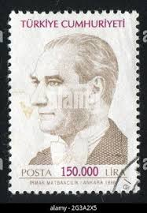 |
| Alamy | TURKEY - CIRCA 1973: stamp printed by Turkey, shows president Kemal Ataturk, circa 1973 Stock Photo - Alamy | 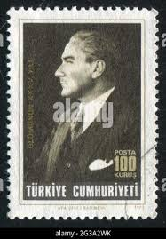 |
| Shutterstock | Turkey Circa 1998 Cancelled Revenue Stamp Stock Photo 2688143315 | Shutterstock | 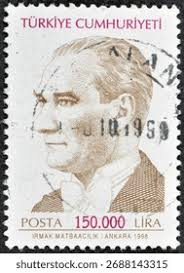 |
| Dreamstime.com | Mustafa Kemal Ataturk, E Founding Father of the Republic of Turkey Editorial Stock Photo - Image of father, politician: 193873668 | 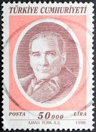 |
| lastdodo.com | Mustafa Kemal Atatürk [1881-1938] Stamp catalogue - LastDodo | 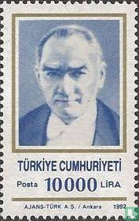 |
| 123RF | MOSCOW, RUSSIA - FEBRUARY 10, 2019: A Stamp Printed In Turkey Shows Kemal Ataturk, Definitive Postage Stamps, 1972, Ataturk Serie, Circa 1972 Stock Photo, Picture and Royalty Free Image. Image 120302446. | 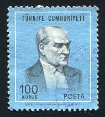 |
| buyhungarianstamps.com | 2263-2265 Turkey - Kemal Ataturk (MNH) – Eastern Europe Postage Stamps | Hungaria Stamp Exchange | 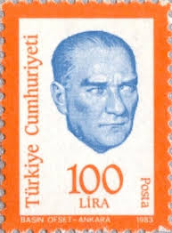 |
| Alamy | TURKEY - CIRCA 1966: stamp printed by Turkey, shows Huseyin Sadettin Arel, writer, circa 1966 Stock Photo - Alamy | 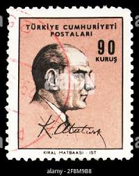 |
| Shutterstock | Turkey Circa 1989 Stamp Printed By Stock Photo 99624989 | Shutterstock | 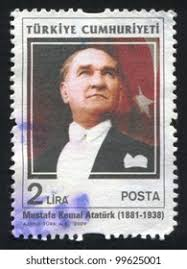 |
| Dreamstime.com | Kemal Ataturk (1881-1938), Serie, Circa 1998 Editorial Photography - Image of celebrity, design: 116021362 | 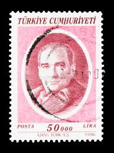 |
| Alamy | TURKEY - CIRCA 1971: stamp printed by Turkey, shows Turkey-Iran railroad, circa 1971 Stock Photo - Alamy | 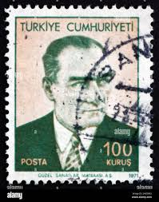 |
| Dreamstime.com | TURKEY - CIRCA 1961: a Stamp Printed in Turkey Shows a Portrait of Kemal Ataturk, Circa 1961. Editorial Stock Photo - Image of postal, portrait: 158453913 | 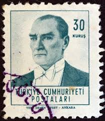 |
| eBay | Turkey Sc 1525-1530 MNH. 1961-1966 Ataturk definitives complete, F-VF | eBay | 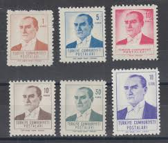 |
| Dreamstime.com | Postage Stamp Printed in Turkey Shows Ataturk, Definitive Postage Stamps, 1994, Ataturk Serie, Circa 1994 Editorial Stock Image - Image of famous, circa: 162205874 | 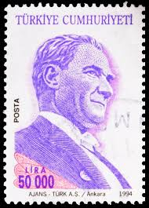 |
| ebid.net | HUNGARY, MAMMAL, Alpine Ibex, Capra ibex, green 1961, 1Ft on eBid United States | 204336587 | 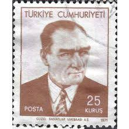 |
| Shutterstock | Turkey Circa 1989 Stamp Printed Turkey Stock Photo 46194391 | Shutterstock | 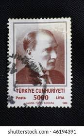 |
| lastdodo.fr | Kemal Atatürk 58 (2023) - Turquie - LastDodo | 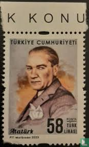 |
| Dreamstime.com | Postage Stamp Printed in Turkey Shows Kemal Ataturk (1881-1938), First President, Definitive Postage Stamps Serie, Circa 1966 Editorial Stock Photo - Image of historic, portrait: 165131848 | 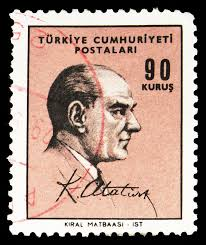 |
| Shutterstock | Istanbul Turkey December 25 2020 Turkish Stock Photo 2547554325 | Shutterstock | 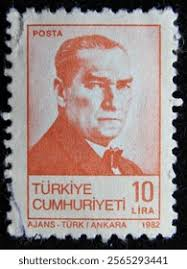 |
| Stamp Collecting Blog | Few minor print flaws on Turkish postage stamps | 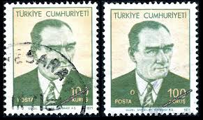 |
| eBay UK | XF/S (Extremely Fine/Superb) Mint Never Hinged/MNH Turkish Stamps for sale | eBay UK | |
| Dreamstime.com | Portrait of Ataturk on the Mountain Summit with Beautiful View at Kas Town in Turkey. Stock Photo - Image of lagoon, building: 213291844 | |
| TURKEY - CIRCA 1961: a Stamp Printed in Turkey Shows a Portrait of Kemal Ataturk, Circa 1961. Editorial Stock Photo - Image of postal, portrait: 1584… | Francobolli | ||
| Shutterstock | 19,291 Stamp 2018 Royalty-Free Images, Stock Photos & Pictures | Shutterstock | |
| Shutterstock | Atatürk Portrait: Over 1,284 Royalty-Free Licensable Stock Photos | Shutterstock | |
| Dreamstime.com | Kemal Ataturk, President, TR2304, 100 Birth Anniversary of Ataturk Serie, Circa 1981 Editorial Photo - Image of correspondence, hobby: 235057646 | |
| Dreamstime.com | TURKEY - CIRCA 1965: a Stamp Printed in Turkey Shows Kemal Ataturk and His Signature, Circa 1965. Editorial Stock Photo - Image of collection, envelope: 188827933 | |
| HipStamp | Turkey Scott No. 1192 | Europe - Turkey, General Issue Stamp / HipStamp | |
| Dreamstime | Postage Stamp Turkey 1965. Ataturk Portrait Editorial Image - Image of designer, history: 210209470 |  |
| Shutterstock | Ankara Türkiye 16 March 2021 Republic Stock Photo 1937361832 | Shutterstock | |
| Shutterstock | Ataturk Face: Over 692 Royalty-Free Licensable Stock Photos | Shutterstock |